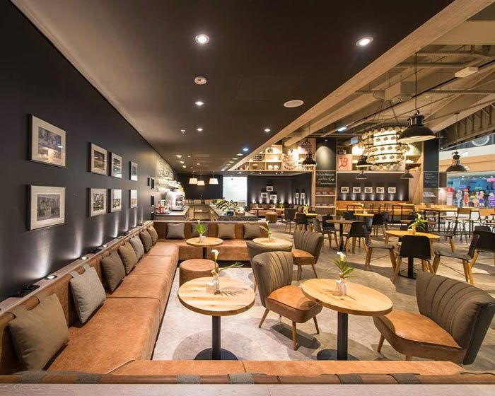
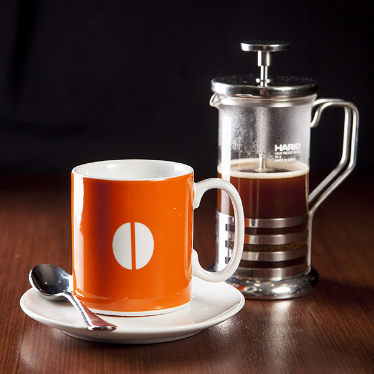
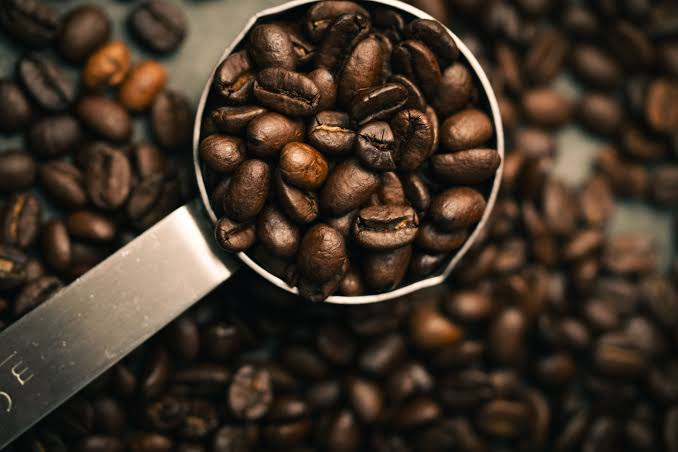
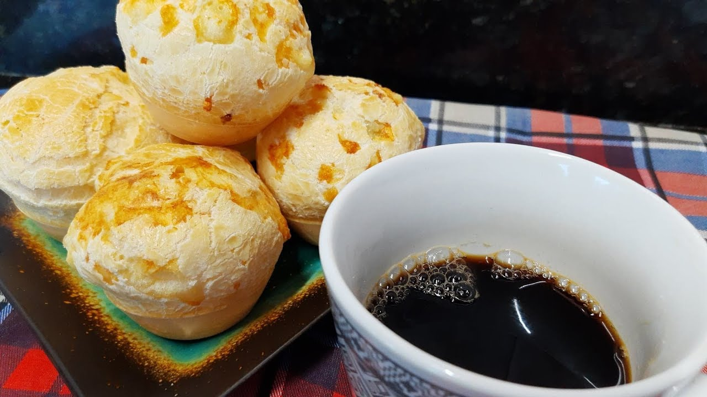

Descubra o verdadeiro sabor do café artesanal.
Grãos selecionados, torra fresca e o ambiente perfeito para a sua pausa do dia. Venha viver essa experiência.
Os Favoritos da Casa
Expresso Clássico
Intenso e encorpado, extraído na perfeição para começar o dia com energia.
R$ 7,00
Cappuccino Cremoso
A combinação perfeita de café expresso, leite vaporizado e um toque de canela.
R$ 14,00
Cold Brew Refrescante
Café extraído a frio por 18 horas. Suave, menos ácido e perfeito para dias quentes.
R$ 16,00
Nosso Espaço
Um ambiente acolhedor preparado especialmente para você no coração da cidade.



